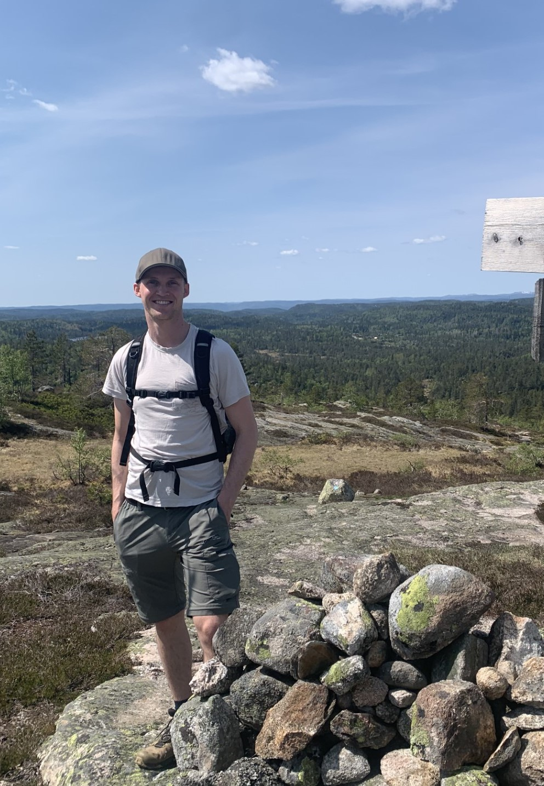

JU design

Velkommen til min side. Her kan dere se mine tidligere erfaringer og jeg vil si litt
om meg selv. Nederst kan du også klikke deg videre for å se min portofølje
Utdanning/bakgrunn:
- Introkurs i HTML ved folkehøyskole
- Bachelor ved UIA
Jobberfaring:
- Jobbet 2,5 år i psykisk helsearbeid
- Jobbet 3 år i enhet for helse og mestring
Ferdigheter:
- Kan lage nettsider fra bunnen med HTML, CSS, JavaScript
- Har noe erfaring med python
Sertifikater:
- Tatt deler av webutvikling bootcamp på Udemy
- Førerkort klasse B
Kontakt meg | Om meg | Portofølje